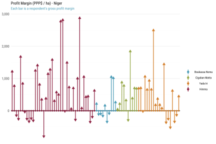
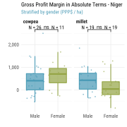
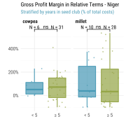
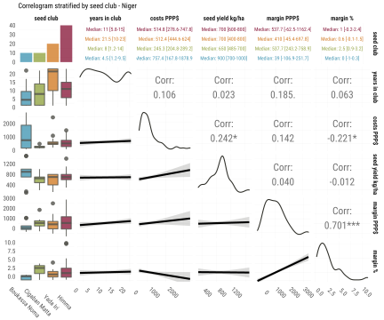
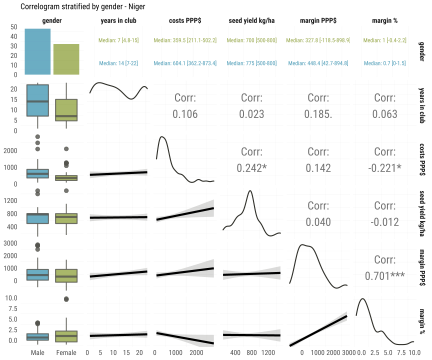
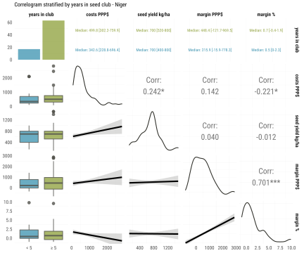
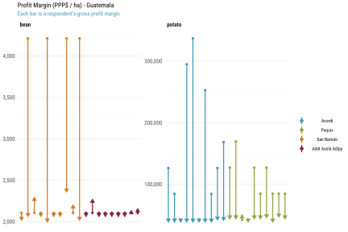

Guatemala
Notes:
- 1 Int’l $ = 4.01 GTQ (Quetzal) using 2020 World Bank PPP conversion rates (1 Int’l $ = 1 USD)
- All costs are reported per hectare, except for labeling and packaging costs (per bag of 3 pounds or 1.36 kg). Other marketing costs are assumed also per hectare
- Inspection and certification fees are per farm (total fees for a single season)
- Some farmers grow multiple crops
Survey Codebook
xrate <- 4.01
# Load respondent data
hh <- fread("../data/gtm/hh.csv")
# Load complete codebook
lbl <- fread("../data/codebook.csv")There are 21 variables and 39 observations in this set. A detailed codebook is shown below.
kbl(lbl[label %in% names(hh)], align="llccc", caption="Survey Codebook")| code | label | type | unit | constructed |
|---|---|---|---|---|
| hhid | Code | character | uid | FALSE |
| age | Age | numeric | years | FALSE |
| gender | Sex | character | class | FALSE |
| group | Group | character | class | FALSE |
| adm1_nm | Province | character | class | FALSE |
| crop | Crop | character | class | FALSE |
| member_years | How long have you been a member of this group? | numeric | years | FALSE |
| seed_ha_lcu | Cost seed per ha (LCU) | numeric | lcu/ha | FALSE |
| fert_ha_lcu | Cost of fertilizer per ha (LCU) | numeric | lcu/ha | FALSE |
| pest_ha_lcu | Cost of pesticide per ha (LCU) | numeric | lcu/ha | FALSE |
| tran_ha_lcu | Cost of transport per ha (LCU) | logical | lcu/ha | FALSE |
| labor_ha_lcu | Labor cost (LCU) | numeric | lcu/ha | FALSE |
| cert_lcu | Inspection / certification Fees (LCU) | numeric | lcu/farm/season | FALSE |
| labl_kg_lcu | Labelling costs per kg (LCU) | numeric | lcu/kg | FALSE |
| pckg_kg_lcu | Packaging costs per kg (LCU) | numeric | lcu/kg | FALSE |
| mark_kg_lcu | Other marketing costs? (LCU) | numeric | lcu/kg | FALSE |
| yield_ha_kg | Estimated Yield (kg/ha) | numeric | kg/ha | FALSE |
| sales_kg_lcu | Selling price of seed per kg (LCU) | numeric | lcu/kg | FALSE |
| sales_ha_kg | How many kg were sold in the season? | numeric | kg/ha | FALSE |
| margin_exp_ha_sh | What was your expected gross margin? | numeric | lcu/ha | FALSE |
Recode variable names.
setnames(hh, lbl$label, lbl$code, skip_absent=T)Additional recodes for categorical variables.
setorder(hh, adm1_nm, group, gender, crop)
hh[, `:=`(
hhid = paste("GTM", gsub(" ", "0", format(1:.N, width=3)), sep=""),
iso3 = "GTM",
adm1_nm = factor(adm1_nm),
group = factor(group, labels=c(
`ACORDI` = "Acordi",
`PAQUIX` = "Paquix",
`SAN BARTOLO` = "San Bartolo",
`ADAT, AXOLA, ADIPY` = "Adat Axola Adipy"
)),
gender = factor(gender, labels=c(Male="Male", Female="Female")),
age = factor(age, labels=c(`15-29`="< 30", `30`="≥ 30"))
)]Spatial Covariates
Using community GPS coordinates we also suggest to enrich this dataset with additional biophysical and geospatial variables, e.g.:
- Agroecological zone
- Travel time to nearest market
- Distance to nearest seed center / company
- Size of nearest seed center / company
- Population density
- Last season total rainfall
- Last season heat stress days (if any)
[pending GPS coordinates]
Constructed Variables
We construct total costs per ha costs_ha_lcu as the sum of individual cost line items.
hh[,
tran_ha_lcu := as.numeric(tran_ha_lcu)
][,
tran_ha_lcu := fifelse(is.na(tran_ha_lcu), 0, tran_ha_lcu)
][, costs_ha_lcu :=
# Per ha costs
seed_ha_lcu + fert_ha_lcu + pest_ha_lcu + tran_ha_lcu + labor_ha_lcu + cert_lcu + mark_kg_lcu +
# Per kg costs
yield_ha_kg * (1/1.36) * (labl_kg_lcu + pckg_kg_lcu)]
hh[, summary(costs_ha_lcu)]## Min. 1st Qu. Median Mean 3rd Qu. Max.
## 1.308e+05 1.416e+05 6.161e+07 4.164e+08 4.255e+08 3.940e+09We also construct total sales per ha sales_ha_lcu.
hh[, sales_ha_lcu := sales_kg_lcu * sales_ha_kg]Further we construct gross margin per ha margin_ha_lcu, total sales sales_ha_sh and profit margin margin_ha_sh per unit of (variable) input costs, and costs_ha_ppp, sales_ha_ppp and margin_ha_ppp in PPP terms to allow for comparisons across groups and countries.
We also construct a measure of total factor productivity tfp as output per unit of input costs. Strictly speaking it is only “partial factor productivity” here because we don’t include the rental cost of land, land preparation costs, irrigation costs, and the costs of animal and mechanical implements.
hh[, `:=`(
margin_ha_lcu = sales_ha_lcu - costs_ha_lcu
)][, `:=`(
sales_ha_sh = sales_ha_lcu / costs_ha_lcu,
margin_ha_sh = margin_ha_lcu / costs_ha_lcu,
costs_ha_ppp = costs_ha_lcu / xrate,
sales_ha_ppp = sales_ha_lcu / xrate,
margin_ha_ppp = margin_ha_lcu / xrate
)][, `:=`(
tfp = yield_ha_kg / costs_ha_ppp
)]Finally we normalize all farmer cost line items into a “long” table hh_prod_cost for charting.
# Normalize production cost table
hh_prod_cost <- hh[, .(hhid,
Seeds = seed_ha_lcu,
Fertilizer = fert_ha_lcu,
Pesticides = pest_ha_lcu,
Transport = tran_ha_lcu,
Labor = labor_ha_lcu,
Certification = cert_lcu,
Labeling = yield_ha_kg * (1/1.36) * labl_kg_lcu,
Packaging = yield_ha_kg * (1/1.36) * pckg_kg_lcu,
Marketing = mark_kg_lcu
)]
hh_prod_cost <- melt(hh_prod_cost, id.vars=1, value.name="lcu", variable.name="type")
hh_prod_cost[hh, on=.(hhid), `:=`(
# Add categorical vars
group = i.group,
gender = i.gender,
age = i.age,
crop = i.crop
)][, `:=`(
# Add cost shares and PPP terms
share = lcu/sum(lcu, na.rm=T),
ppp = lcu/xrate
), by=.(hhid)]Descriptive Statistics
Respondent Characteristics
First a breakdown by group.
ggplot(
hh[, .N, by=.(adm1_nm, group, age, gender, crop)],
aes(axis1=gender, axis2=age, axis3=crop, y=N)) +
geom_alluvium(aes(fill=group), width=1/4) +
geom_stratum(width=1/4) +
geom_text(stat="stratum", aes(label=after_stat(stratum)), angle=90, size=2.2) +
scale_x_discrete(limits=c("Gender", "Age", "Crop")) +
labs(y=NULL, fill="Seed Club",
title = "Survey Respondents (Guatemala)",
subtitle = "Stratified by club and demographics") +
theme_def(axis.text=element_text(face="bold"))
Showing contingency table between each pair of categorical variables (seed club group, gender, and age age).
ttt_ftable(hh, vars=c("group", "gender", "age"))| group | gender | < 30 | ≥ 30 | Sum |
|---|---|---|---|---|
N = 39 | Mantel-Haenszel chi-squared = 5.02 | p-value = 0.1705 | ||||
| Acordi | Male | 2.6 | 5.1 | 7.7 |
| Female | 5.1 | 12.8 | 17.9 | |
| Sum | 7.7 | 17.9 | 25.6 | |
| Paquix | Female | 2.6 | 20.5 | 23.1 |
| Sum | 2.6 | 20.5 | 23.1 | |
| San Bartolo | Female | 0 | 25.6 | 25.6 |
| Sum | 0 | 25.6 | 25.6 | |
| Adat Axola Adipy | Male | 0 | 5.1 | 5.1 |
| Female | 0 | 20.5 | 20.5 | |
| Sum | 0 | 25.6 | 25.6 | |
| Sum | Male | 2.6 | 10.3 | 12.8 |
| Female | 7.7 | 79.5 | 87.2 | |
| Sum | 10.3 | 89.7 | 100 | |
Mantel-Haenszel test shows weak association between the 3 variables. This is further shown in the 2x2 mosaic plots below (standardized residuals between [-2,2]).
mosaicplot(~gender+age, hh, shade=T,
main=NA, xlab="Gender", ylab="Age")
mosaicplot(~group+age, hh, shade=T,
main=NA, xlab="Province", ylab="Age")

NB. blue means there are more observations in the cell than would be expected under the null model (independence). Red means there are fewer observations than would have been expected.
Seed Production Costs
We then look at the general breakdown and distribution of input costs across seed clubs, crop, gender, and input type.
Note that Acordi and Paquix grow potato, while San Bartolo and Adapt grow bean.
ggplot(hh, aes(gender, costs_ha_ppp, fill=gender)) +
geom_boxplot(alpha=.7) +
scale_y_continuous(labels=comma) +
facet_wrap(~crop, scales="free") +
labs(x="", y="", fill="",
title="Total Input Costs (PPP$ / ha) - Guatemala",
subtitle="Stratified by gender and crop type") +
theme_def(legend.position="none")
ggplot(hh, aes(group, costs_ha_ppp, fill=group)) +
geom_boxplot(alpha=.7) +
scale_y_continuous(labels=comma) +
facet_wrap(~crop, scales="free") +
labs(x="", y="", fill="",
title="Total Input Costs (PPP$ / ha) - Guatemala",
subtitle="Stratified by seed club and crop type") +
theme_def(legend.position="none")
Breakdown across categories of farm input.
tbl <- hh_prod_cost[, .(
share = mean(share, na.rm=T)
), keyby=.(crop, gender, type)]
ggplot(tbl, aes(gender, share, fill=type)) +
geom_bar(stat="identity", alpha=.8, width=.6) +
scale_y_continuous(labels=percent) +
scale_fill_manual("", values=colorRampPalette(pal)(9)) +
facet_wrap(~crop) +
labs(y="", x="",
title="Breakdown of Input Costs by Category - Guatemala",
subtitle="Stratified by gender and crop types") +
theme_def()
tbl <- hh_prod_cost[, .(
share = mean(share, na.rm=T)
), keyby=.(group, crop, type)]
ggplot(tbl, aes(group, share, fill=type)) +
geom_bar(stat="identity", alpha=.8, width=.6) +
scale_y_continuous(labels=percent) +
scale_fill_manual("", values=colorRampPalette(pal)(9)) +
facet_wrap(~crop, scales="free_x") +
labs(y="", x="",
title="Breakdown of Input Costs by Category - Guatemala",
subtitle="Stratified by seed club and crop type") +
theme_def()
Are there significant differences across groups?
ggplot(hh_prod_cost,
aes(type, ppp, fill=gender)) +
geom_boxplot(alpha=.7) +
scale_y_continuous(labels=comma) +
coord_flip() +
facet_wrap(~crop, scales="free_x") +
labs(x="", y="", fill="",
title="Input Costs by Category (PPP$ by Hectare) - Guatemala",
subtitle="Stratified by gender and crop type") +
theme_def(legend.position="top")
ggplot(hh_prod_cost,
aes(type, ppp, fill=group)) +
geom_boxplot(alpha=.7) +
scale_y_continuous(labels=comma) +
coord_flip() +
facet_wrap(~crop, scales="free_x") +
labs(x="", y="", fill="",
title="Input Costs by Category (PPP$ by Hectare) - Guatemala",
subtitle="Stratified by seed club and crop type") +
theme_def(legend.position="top")
Efficiency
Differences in productivity measures across groups?
fmt <- function(x) c(Mean=comma(mean(x, na.rm=T)), SD=comma(sd(x, na.rm=T)))
ttt(yield_ha_kg ~ group | gender, data=hh, render=fmt,
caption="Seed Yield (kg / ha) - Guatemala")| group | Statistic | Male | Female |
|---|---|---|---|
| Acordi | Mean | 84,235 | 186,521 |
| SD | 42,118 | 111,053 | |
| Paquix | Mean | NA | 2,106 |
| SD | NA | 0 | |
| San Bartolo | Mean | NA | 97,336 |
| SD | NA | 40,148 | |
| Adat Axola Adipy | Mean | 3,159 | 2,896 |
| SD | 1,489 | 1,090 |
fmt <- function(x) c(Mean=comma(mean(x, na.rm=T)), SD=comma(sd(x, na.rm=T)))
ttt(yield_ha_kg ~ group | age, data=hh, render=fmt,
caption="Seed Yield (kg / ha) - Guatemala")| group | Statistic | < 30 | ≥ 30 |
|---|---|---|---|
| Acordi | Mean | 168,470 | 150,420 |
| SD | 151,857 | 93,728 | |
| Paquix | Mean | 2,106 | 2,106 |
| SD | NA | 0 | |
| San Bartolo | Mean | NA | 97,336 |
| SD | NA | 40,148 | |
| Adat Axola Adipy | Mean | NA | 2,948 |
| SD | NA | 1,087 |
ggplot(hh, aes(gender, yield_ha_kg, fill=gender)) +
geom_boxplot(alpha=.7) +
scale_y_continuous(labels=comma) +
facet_wrap(~crop, scales="free_y") +
labs(x="", y="", fill="",
title="Seed Yield (kg / ha) - Guatemala",
subtitle="Stratified by gender") +
theme_def(legend.position="none")
ggplot(hh, aes(gender, sales_ha_ppp, fill=gender)) +
geom_boxplot(alpha=.7) +
scale_y_continuous(labels=comma) +
facet_wrap(~crop, scales="free_y") +
labs(x="", y="", fill="",
title="Total Seed Sales (PPP$ / ha) - Guatemala",
subtitle="Stratified by gender") +
theme_def(legend.position="none")
ggplot(hh, aes(group, yield_ha_kg, fill=group)) +
geom_boxplot(alpha=.7) +
scale_x_discrete(labels=label_wrap(5)) +
scale_y_continuous(labels=comma) +
facet_wrap(~crop, scales="free") +
labs(x="", y="", fill="",
title="Seed Yield (Kg / ha) - Guatemala",
subtitle="Stratified by seed club") +
theme_def(legend.position="none")
ggplot(hh, aes(group, sales_ha_ppp, fill=group)) +
geom_boxplot(alpha=.7) +
scale_x_discrete(labels=label_wrap(5)) +
scale_y_continuous(labels=comma) +
facet_wrap(~crop, scales="free") +
labs(x="", y="", fill="",
title="Total Seed Sales (PPP$ / ha) - Guatemala",
subtitle="Stratified by seed club") +
theme_def(legend.position="none")
Looking at production frontiers (units of output vs. units of input). We expect S-shape curves with farmers at different levels of technical efficiency along the curve.
outlier <- ""
ggplot(hh[!hhid %in% outlier], aes(costs_ha_ppp, yield_ha_kg)) +
geom_smooth(size=.8) +
geom_point(alpha=.7, shape=20, color=1) +
geom_point(data=hh[hhid %in% outlier], aes(costs_ha_ppp, yield_ha_kg),
alpha=.7, color=2, shape=18) +
scale_x_continuous(labels=comma) +
scale_y_continuous(labels=comma) +
facet_wrap(~crop, scales="free") +
#coord_cartesian(ylim=c(4000, 14000)) +
labs(x="", y="",
title="Production Frontier (Output vs. Input) - Guatemala",
subtitle="Each point is a respondent (kg vs. PPP$ / ha)") +
theme_def(legend.position="none")
ggplot(hh[!hhid %in% outlier], aes(costs_ha_ppp, yield_ha_kg)) +
geom_smooth(aes(color=gender, fill=gender), size=.8, level=.9) +
geom_point(alpha=.7, shape=20) +
scale_x_continuous(labels=comma) +
scale_y_continuous(labels=comma) +
facet_wrap(~crop, scales="free") +
#coord_cartesian(ylim=c(4000, 14000)) +
labs(x="", y="",
title="Production Frontier (Output vs. Input) - Guatemala",
subtitle="Each point is a respondent. Shade shows 90% CI (kg vs. PPP$ / ha)") +
theme_def(legend.position="right")
ggplot(hh[!hhid %in% outlier], aes(costs_ha_ppp, yield_ha_kg)) +
geom_smooth(aes(color=group, fill=group), size=.8, level=.9) +
geom_point(alpha=.7, shape=20) +
scale_x_continuous(labels=comma) +
scale_y_continuous(labels=comma) +
facet_wrap(~crop, scales="free") +
#coord_cartesian(ylim=c(4000, 14000)) +
labs(x="", y="",
title="Production Frontier (Output vs. Input) - Guatemala",
subtitle="Each point is a respondent. Shade shows 90% CI (kg vs. PPP$ / ha)") +
theme_def(legend.position="right")
Profitability
By gender:
fmt <- function(x) c(Mean=comma(mean(x, na.rm=T)), SD=comma(sd(x, na.rm=T)))
ttt(margin_ha_ppp ~ group | gender, data=hh, render=fmt,
caption="Mean Gross Profit Margin in Absolute Terms (PPP$ / ha) - Guatemala")| group | Statistic | Male | Female |
|---|---|---|---|
| Acordi | Mean | -63,099,362 | -348,585,991 |
| SD | 54,633,741 | 328,032,001 | |
| Paquix | Mean | NA | 31,703 |
| SD | NA | 37,464 | |
| San Bartolo | Mean | NA | -91,752,640 |
| SD | NA | 70,238,786 | |
| Adat Axola Adipy | Mean | 8,431 | 9,174 |
| SD | 14,046 | 15,052 |
fmt <- function(x) c(Mean=percent(mean(x, na.rm=T)), SD=percent(sd(x, na.rm=T)))
ttt(margin_ha_sh ~ group | gender, data=hh, render=fmt,
caption="Mean Gross Profit Margin in Relative Terms (% of variable input costs) - Guatemala")| group | Statistic | Male | Female |
|---|---|---|---|
| Acordi | Mean | -88% | -88% |
| SD | 0% | 0% | |
| Paquix | Mean | NA | 53% |
| SD | NA | 63% | |
| San Bartolo | Mean | NA | -87% |
| SD | NA | 1% | |
| Adat Axola Adipy | Mean | 6% | 8% |
| SD | 15% | 12% |
By age group:
fmt <- function(x) c(Mean=comma(mean(x, na.rm=T)), SD=comma(sd(x, na.rm=T)))
ttt(margin_ha_ppp ~ group | age, data=hh, render=fmt,
caption="Mean Gross Profit Margin in Absolute Terms (PPP$ / ha) - Guatemala")| group | Statistic | < 30 | ≥ 30 |
|---|---|---|---|
| Acordi | Mean | -333,466,264 | -232,714,461 |
| SD | 463,648,364 | 248,830,127 | |
| Paquix | Mean | -673 | 35,750 |
| SD | NA | 37,889 | |
| San Bartolo | Mean | NA | -91,752,640 |
| SD | NA | 70,238,786 | |
| Adat Axola Adipy | Mean | NA | 9,025 |
| SD | NA | 14,079 |
fmt <- function(x) c(Mean=percent(mean(x, na.rm=T)), SD=percent(sd(x, na.rm=T)))
ttt(margin_ha_sh ~ group | age, data=hh, render=fmt,
caption="Mean Gross Profit Margin in Relative Terms (% of variable input costs) - Guatemala")| group | Statistic | < 30 | ≥ 30 |
|---|---|---|---|
| Acordi | Mean | -88% | -88% |
| SD | 0% | 0% | |
| Paquix | Mean | -2% | 60% |
| SD | NA | 63% | |
| San Bartolo | Mean | NA | -87% |
| SD | NA | 1% | |
| Adat Axola Adipy | Mean | NA | 8% |
| SD | NA | 12% |
ggplot(hh, aes(x=1:nrow(hh), color=group)) +
geom_linerange(aes(ymin=costs_ha_ppp, ymax=sales_ha_ppp, linetype=gender), size=.6) +
geom_point(aes(y=costs_ha_ppp), shape=20, size=1.4) +
geom_point(aes(y=sales_ha_ppp), shape=17, size=1.4) +
scale_y_continuous(labels=comma) +
labs(x=NULL, y=NULL, color="", linetype="",
title="Profit Margin (PPP$ / ha) - Guatemala",
subtitle="Each bar is a respondent's gross profit margin") +
theme_def(legend.position="right")
Farmers’ gross profit margins by gender and across groups in both absolute terms and in relative terms as percentage of total costs per hectare.
ggplot(hh, aes(gender, margin_ha_ppp, fill=gender)) +
geom_boxplot(alpha=.7) +
scale_y_continuous(labels=comma) +
facet_wrap(~crop) +
labs(x="", y="", fill="",
title="Gross Profit Margin in Absolute Terms - Guatemala",
subtitle="Stratified by gender (PPP$ / ha)") +
theme_def(legend.position="none")
ggplot(hh, aes(gender, margin_ha_sh, fill=gender)) +
geom_boxplot(alpha=.7) +
scale_y_continuous(labels=percent) +
facet_wrap(~crop) +
labs(x="", y="", fill="",
title="Gross Profit Margin in Relative Terms - Guatemala",
subtitle="Stratified by gender (% of total costs)") +
theme_def(legend.position="none")
ggplot(hh, aes(group, margin_ha_ppp, fill=group)) +
geom_boxplot(alpha=.7) +
scale_x_discrete(labels=label_wrap(5)) +
scale_y_continuous(labels=comma) +
labs(x="", y="", fill="",
title="Gross Profit Margin in Absolute Terms - Guatemala",
subtitle="Stratified by seed club (PPP$ / ha)") +
theme_def(legend.position="none")
ggplot(hh, aes(group, margin_ha_sh, fill=group)) +
geom_boxplot(alpha=.7) +
scale_x_discrete(labels=label_wrap(5)) +
scale_y_continuous(labels=percent) +
labs(x="", y="", fill="",
title="Gross Profit Margin in Relative Terms - Guatemala",
subtitle="Stratified by seed club (% of total costs)") +
theme_def(legend.position="none")

rm(tmp, x, y, i, fmt)
saveRDS(hh, "../tmp/data_gtm.rds")